農業技術センターフェアに今年も行きました。
2014/10/11
お買い得な農産物が沢山販売しているイベントです。
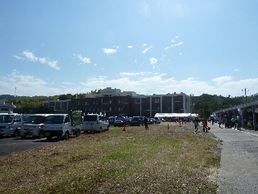
人気があるので買い物客が多いです。
私も色々買い物をして帰りました。
出雲市に農業技術センターがあって良かった。
あと、畜産技術センターのおまつりもお勧めです。
島根県出雲市芦渡町2440
2014/10/11
お買い得な農産物が沢山販売しているイベントです。

人気があるので買い物客が多いです。
私も色々買い物をして帰りました。
出雲市に農業技術センターがあって良かった。
あと、畜産技術センターのおまつりもお勧めです。
2013/10/12
お昼から農業技術センターフェアに行きました。
午前中のお客さんが帰ったあとなので、近くの駐車場に車が止められたので楽ちんでした。
午後1時くらいですが、まだ売店にも商品が色々あって見てて楽しかったです。
で、1時半からビンゴ大会に参加しました。
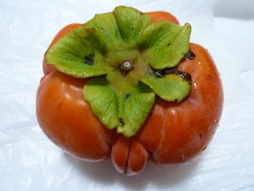
柿が当たりました。
2つもたっらんですが、そのうちの1つは面白い格好してました。
早秋（甘柿・ハウス栽培）って柿だそうでうす。種がなくて、甘くて大きな柿でした。
ビンゴ大会の景品が沢山あり、沢山の人が当たっていました。
はずれちゃうととっても悔しいとは思いますが、また来年も農業技術センターフェアに行きたいって思いました。
2012/10/06
お得なイベント「農業技術センターフェア」に行きました。
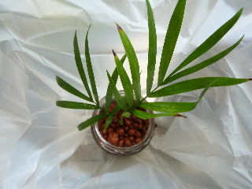
観葉植物を早速もらいました。
好きな植物と空き瓶を選んで、砂を2種類入れて完成です。
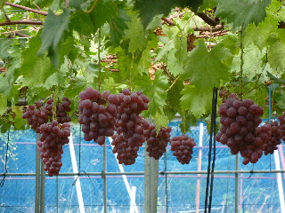
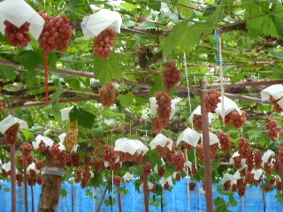
クイズをしながら葡萄やプラム、梨、柿なんかのビニールハウスを見学しました。
葡萄の試食もありました。
他にもお米の試食、スタンプラリー、アンケートでプレゼントなんかがありました。
お買い得な野菜や果物の販売もありました。
お昼ご飯に、焼きそばとネギ焼きを食べて帰りました。
2011/10/15
出雲市芦渡町にある島根県農業技術センターのイベントに行きました。
お店が沢山並んでいてにぎやかでした。 朝1には何かいいものがあったらしく、買い物の行列ができていました。
私は一番にいも掘り体験に並びました。
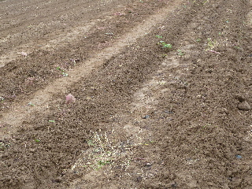
イモのツルはすでにとられているので、あとは掘るだけです。
軍手、スコップはその場で貸してもらえましたし、係の人が土を掘り起こしてくれるので、やわらかくなった土から、イモを引っこ抜くだけの作業で超簡単でした。
バケツ1杯分で、お値段は300円でした。
イベント会場でも安くサツマイモが販売していたので、ちょっと微妙な料金だなって思いました。
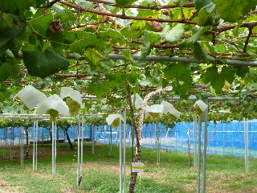
果樹園の圃場を案内してもらいました。
説明を聞きながら美味しい葡萄を数種類試食できました。
なっている葡萄をつまんで食べるので、ブドウ狩りの気分でした。
市販のぶどうより美味しいって思いながら食べました。
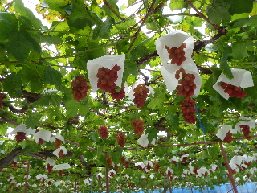
沢山のぶどうの実が付いていると綺麗ですね。
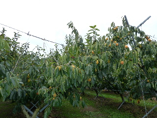
他に、柿や梨の木も説明してもらえました。
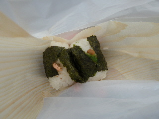
販売コーナでおにぎりを買いました。鮭イクラとオクラ納豆を選びました。 出来たてアツアツで、ふっくらとしたおにぎりでした。
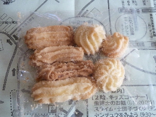
クイズラリーの景品の米粉クッキーをもらって帰りました。
野菜、果物、花苗、食品等、お買い得な商品が沢山ありました。 買い物だけでも楽しいイベントですね。